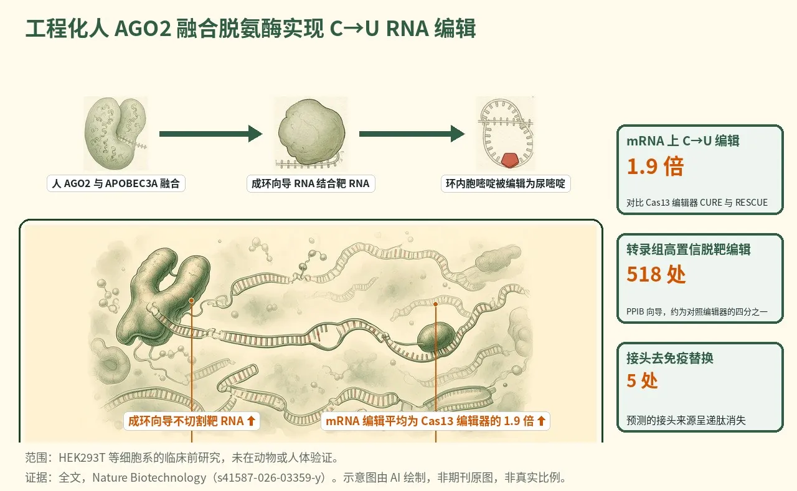

人源编辑器ALTER：C→U效率为Cas13的1.9倍
斯坦福团队把人源 Argonaute 2（AGO2）与人胞苷脱氨酶 APOBEC3A 融合，用"诱导环状结构"的向导 RNA 把靶 RNA 局部撑开成单链环而不切割转录本，得到全部由人源蛋白组成的 C→U RNA 碱基编辑器 ALTER：在 HEK293T 细胞中对 mRNA 靶点的编辑平均为 Cas13 编辑器 CURE 与 RESCUE 的 1.9 倍，全转录组脱靶编辑持平或更低，机器学习预测其免疫原性肽远少于 Cas13 编辑器，并已可用病毒样颗粒与 AAV 递送。

- 人源 AGO2 装载 21 nt 向导 RNA，天然具备快速搜索靶 RNA、高亲和结合的能力
- 向导在中央区留出错配，诱导靶 RNA 形成 14 nt 单链环，既不触发切割也不显著下调转录本
- 融合在 AGO2 上的 APOBEC3A 把环内暴露的胞嘧啶脱氨成尿嘧啶，完成 C→U 编辑
- 全部组件为人源蛋白与短 RNA，预测的 MHC II 类呈递肽远少于 Cas13 编辑器，可经 VLP 或 AAV 递送
示意图概括了 ALTER 的工作方式：以"诱导环状结构"的向导把 AGO2 从 RNA 干扰改写为可编程的 RNA 结合模块，让融合的人源脱氨酶在环内完成定点 C→U 编辑，从而用纯人源组件替代 Cas13 支架。
研究背景与待解问题
可编程 RNA 操纵工具目前几乎全部建立在非人源蛋白之上。Cas13／VI 型 CRISPR 系统及更广义的 OMEGA 家族蛋白被引入哺乳动物细胞后，催化活性型可切割 RNA，而失活的 dCas13 融合脱氨酶即可编辑 RNA 序列，还能改写 m6A 修饰、调控剪接与翻译。但这些源自原核生物的支架存在三类难以回避的问题：脱靶与附带切割活性、与宿主调控机器之间未知的相互作用，以及 Cas13 本身体积庞大。对治疗转化而言，更关键的是免疫原性与递送：人群中已存在针对 Cas 蛋白的预存适应性免疫，CRISPR RNA 本身可触发固有免疫反应，而 RNA 编辑由于转录本不断周转，很可能需要反复给药，这会把免疫原性问题进一步放大。
作者提出的替代思路是：与其从零搭建一个外源支架，不如直接"改写"人体内已有的可编程机器。哺乳动物细胞本就用小 RNA 来编程 Argonaute（AGO）家族蛋白；经过二十余年 RNAi 研究，AGO2 与向导 RNA 的结合规则、切割要求、亲和力调控已被刻画得相当清楚，临床上的 siRNA 药物正是依赖 AGO2 去降解靶转录本。AGO2–向导复合物对细胞内 RNA 的搜索效率高，结合动力学与亲和力均优于 Cas13 与自由 RNA 配对，且能在靶标存在二级结构时仍然结合。待解的问题因此是：能否在不破坏这些进化优化特性的前提下，让 AGO2 从"降解"切换到"定点结合并招募效应域"，从而得到一个完全由人源蛋白构成的可编程 RNA 操纵平台？
研究设计
设计的核心是向导 RNA 的"反向工程"。siRNA 可按功能分为五段：5′ 端第 1 位碱基（g1）锚定在 AGO2 的口袋中；种子区（g2–g8）的互补性决定靶标结合；补充区（g13–g16）提高亲和力；中央区（g9–g12）完全互补虽略微降低亲和力，却是切割的必要条件；尾区（g17 至末端）的配对对结合基本无影响。因此，在中央区引入错配的小 RNA 可以保留高亲和结合而不引发切割——多数人类 miRNA 正是用这种方式招募抑制因子而非切割靶标。
与此同时，APOBEC 家族作用于单链 RNA 催化 C→U 脱氨，而 A3A 偏好编辑位于茎环结构 3′ 段的胞嘧啶。两条线索合在一起便是 ALTER 的设计：把 A3A 融合到 AGO2 上，用中央区错配的向导在靶标上"撑"出一个单链环，使目标 C 恰好落在脱氨酶的理想底物位置，同时避免转录本被切割或下调。AlphaFold3 建模支持融合蛋白各组分折叠正常、A3A 可与靶 RNA 的未配对区段结合。
向导设计被参数化为三个变量：诱导环的大小 x、靶标 C 在环内的位置 y、环相对于向导的取向（i, j）。作者用 EGFP Y66H 报告系统筛选这些参数——这是一个弱蓝色荧光的 EGFP 突变体，经一次 C→U 编辑即可恢复绿色荧光；报告基因被稳定整合进 HEK293T 细胞以减少批间差异。蛋白层面则系统测试了 AGO2 的核酸酶失活突变、减少非切割性下调的 MID 域双突变、删除 127 个氨基酸的 PAZ 结构域，以及 A3A 改变活性与 DNA/RNA 选择性的突变，并做组合。随后，编辑效率用 Oxford Nanopore 测序加 CRISPResso2 定量，转录本丰度用 qPCR（以 SNW1 与 GAPDH 或 HNRNPL 为内参）监测，全转录组效应用 Illumina NovaSeq X Plus 的 2×150 bp mRNA-seq 配合 STAR 比对、GATK 变异识别与 DESeq2 差异表达分析评估。免疫原性用深度神经网络 MARIA 预测 MHC II 类呈递，并据此开展定向去免疫原性改造。最后用病毒样颗粒（VLP）与 AAV 两条路线验证递送可行性。
核心结果
诱导环向导让 AGO2–A3A 完成编辑，且不下调靶转录本
初版构建体 ALTER-1（野生型 AGO2 融合 A3A Y132D）配合向导 14L8(11,10)——在 g11 与 g12 之间诱导 14 nt 单链环、靶标 C 位于环内第 8 位——在 EGFP Y66H 报告细胞中诱导出显著荧光；换用非靶向向导、只表达 A3A，或在构建体中去掉向导、AGO2、A3A 或连接肽，均不产生同等荧光。用稳定整合不稳定型 GFP（ddGFP）的细胞检验敲低：14L8(11,10) 向导相对非靶向对照未降低 ddGFP 荧光，说明内源 AGO2 不会借该向导沉默靶标；与 ALTER-1 共表达时荧光相对单独表达向导仅轻微下降，与"ALTER-1 加非靶向向导"相比无显著差异。
向导参数扫描给出清晰的构效关系：环过小时几乎没有编辑，扩大到 20 nt 则编辑效率下降；靶标 C 位于环内第 6、7、8 位时编辑相当，移到第 9 或 10 位则明显下降（作者推测是 AGO2 对靶标的空间遮蔽）；把环向向导 5′ 端移动会破坏种子区互补性并降低编辑，向 3′ 端移动的影响则较小。在中央区引入 1 个或 3 个错配（即典型 miRNA 结合模式）都会降低编辑活性——也就是说，让 ALTER 工作的是一种"全部碱基互补但不连续"的非天然结合模式。向导既可以质粒编码的 shRNA 形式递送，也可以外源 siRNA 双链形式递送。
理性蛋白工程把活性与背景同时优化
换用天然不切割的 AGO1 或 AGO3 反而使信号显著低于 ALTER-1。在 AGO2 上逐个测试核酸酶相关突变：D597A 与 D669A 降低编辑，H634P 与 ALTER-1 无显著差异，而 Q633R 明显提高活性（作者推测与增强对带负电靶 RNA 的静电亲和有关）。MID 结构域的 F470V;F505V 双突变使信号略降，但非靶向向导下的背景下降更明显，可能与减少 P 小体定位有关。删除 127 个氨基酸的 PAZ 结构域使编辑信号提高 2 倍，同时降低背景，AlphaFold3 建模显示其余结构域受影响很小。组合效应并非简单叠加：∆PAZ 与 F470V;F505V 同时存在的所有突变体都检测不到编辑活性。
A3A 一侧，野生型 A3A 比 Y132D 信号略高且不增加背景；K30R;Y132D 显著提高靶向编辑但背景也升高。两域联合优化最终给出系列构建体：ALTER-2（AGO2 F470V;F505V;Q633R–A3A Y132D）、ALTER-3（AGO2 ∆PAZ;Q633R–野生型 A3A），以及活性最高、背景低于 ALTER-3 并较其编辑提高近 2 倍的 ALTER-4（AGO2 F470V;F505V;Q633R–A3A K30R;Y132G）。为突破 A3A 只认 UC 上下文的限制，作者把 A1 的脱氨结构域嫁接进 A3A 得到 A3A ddA1，构建 ALTER-5，在 GC 版本的 EGFP Y66H 报告上编辑高效、在 AC 版本上也有显著活性（注意三种报告位于不同细胞系，荧光不可直接横向比较）。后续表征以 ALTER-4 为主，因其活性高、对 UC 靶标选择性好且组件均为人源。
与 Cas13 编辑器的正面比较与内源靶点
在 HEK293T-EGFP Y66H 细胞中直接比较：CURE-N 几乎没有荧光信号，RESCUE-S 的活性为 ALTER-4 的三分之一；测序证实了编辑，qPCR 显示没有任何编辑器导致 EGFP Y66H 转录本显著敲低，且荧光恢复与测序得到的 C→U 百分比呈线性关系。摘要层面的总结是：在 HEK293T 细胞中，ALTER 对 mRNA 靶点的 C→U 编辑平均为 CURE 与 RESCUE 的 1.9 倍。
内源靶点上，ALTER-4 在 PPIB C90（此前报道 CURE-N 优于 RESCUE-S 的位点）上编辑水平最高；SMARCA4 C503（此前报道 RESCUE-S 更优）上与 RESCUE-S 相当；ACTB C309 与 TYMS C876 上均显著高于两种 Cas 编辑器。所有内源靶点上，ALTER-4 造成的转录本下降与 dCas 编辑器相似。核内 lncRNA MALAT1 C1053 起初几乎编辑不到，提示 ALTER 基本被排除在核外；在 ALTER-4 N 端加上核定位信号（ALTER-4N）后 MALAT1 编辑显著上升且不下调靶标，但仍低于同时装配了病毒核定位与核输出信号的 CURE-N。ALTER-5 在 PPIB C92 这一 GC 上下文位点的编辑显著高于 RESCUE-S，而迄今没有任何 CURE 变体被证明能在 UC 之外的上下文工作。旁位编辑有两类：本就是 A3A 热点的远端位点，以及位于诱导环内或邻近的位点；用 12L6 向导编辑 TYMS 时，C876 的编辑与 14L8 相当，而 C871 的旁位编辑大幅减少——说明向导设计可同时用于优化靶向编辑与抑制旁位编辑。
全转录组脱靶：数量更低，且主要来自 A3A 而非 AGO2
与 NanoLuc 转染对照比较的 mRNA-seq 显示，靶向 PPIB 的 ALTER-4 只产生 518 个高置信 C→U 脱靶编辑，比文献报道的 RESCUE-S 与 CURE-N 低 4 倍。靶向 TYMS 时脱靶更多，说明脱靶规模高度依赖向导与靶标；但 TYMS 编辑随 ALTER-4 剂量呈明确的量效关系，把质粒从 3 µg 降到 0.5 µg（此时 TYMS 编辑水平与全剂量 CURE-N 或 RESCUE-S 相当）后，脱靶数下降 25 倍。把每个脱靶位点映射回转录本并分析其序列与结构环境，可见 −4 到 +1 的清晰共有序列与对茎环二级结构的偏好，与已知的 A3A 编辑热点特征吻合；73% 的 ALTER-4 脱靶编辑在单独过表达 A3A 或 A3A 作为 CURE 组分时同样出现。换言之，绝大多数脱靶来自 A3A 自身的附带活性，而与 AGO2 无关，且融合到 AGO2 后 A3A 的脱靶反而显著少于单独过表达 A3A。
针对"是否会劫持内源 miRNA 或扰乱 RNAi"这一特有疑虑，作者做了多重检验：已知受 miRNA 调控的基因在 ALTER-4、CURE 与 RESCUE 的脱靶中都更常见，这种一致性使"miRNA 导向的编辑"难以成立；把向导的种子识别基序比对到脱靶上下文时，只有 ALTER 在脱靶位点近端出现比对频率下降、3′ 邻近区上升的模式，提示确有一小部分脱靶源自向导的非特异结合，但比例很小。差异表达方面，ALTER-4 产生的差异表达基因数高于文献报道的 Cas 编辑器，但基因集富集分析未发现显著失调的通路，差异表达基因的基因本体富集也无明显偏向；用 PPIB 向导时差异表达基因中已知 miRNA 靶标的比例与全部检测基因无异，用 TYMS 向导时上调基因中略有升高，但 CURE-N、RESCUE-S 与 A3A 过表达也呈现类似升高。脱靶编辑与差异表达基因之间重叠很少，提示二者来自不同机制。
机器学习辅助去免疫原性与两条递送路线
免疫原性评估聚焦 MHC II 类呈递——细胞毒性 T 细胞的活化需要 CD4⁺ T 细胞辅助，而逃避 MHC II 限制性抗原呈递对工程化人源细胞的长期存续至关重要。作者用在质谱抗原数据上训练的深度神经网络 MARIA，对每个构建体中所有含非天然残基或蛋白间连接处的 15 肽进行打分，超过总肽段分数第 63 百分位（对应 1% 漏判率）者判为"可能被呈递"。结果符合预期：Cas13 类编辑器的可能呈递肽数量显著多于 ALTER 系列。
对 ALTER-1 与 ALTER-4 而言，超过阈值的肽段大多来自 (GGS)₆ 人工连接肽。连接肽上的 5 个替换（G200C、G201L、S202C、G210L、G216C）即可消除 ALTER-4 中与连接区相关的非天然肽呈递预测。进一步测试不同连接肽——不同长度的柔性 (GGS)、螺旋型 (EAAAK)、XTEN-16（SGSETPGTSESATPES），以及完全不加连接肽直接融合——在 EGFP Y66H 测定中活性相当，作者归因于 AGO2 beam 结构域前 35 个残基缺乏确定结构、本身即可充当柔性连接。在无连接肽版本上，仅需 AGO2 的 M1C 与 Y2W 两个替换即可消除连接处相关的非天然 MHC II 肽呈递预测。去免疫原性的 ALTER-4M 编辑活性仅略有下降，而两个无连接肽变体的活性与原始 ALTER-4 无法区分。
递送方面，作者构建了 MMLV-Gag–ALTER 融合的病毒样颗粒，使 ALTER 在生产细胞内即装载向导并被包装成核糖核蛋白（RNP），从而无需在靶细胞中表达向导；这些 VLP 递送的 ALTER RNP 在只稳定整合 EGFP Y66H 报告的细胞中产生的编辑细胞比例与瞬时转染相当，但信号强度较低。另一条路线是把 ALTER 融合蛋白与向导装进同一个 AAV 载体（AAV-DJ）——AAV 的包装上限约 5 kb，是多项基因治疗已获临床验证的载体；处理报告细胞后编辑有效，阳性细胞比例相对转染仅小幅下降，信号强度同样较低。
机制解读
论文所证实的： 用中央区错配、诱导单链环的向导 RNA，可以把人源 AGO2 从 RNA 干扰的"切割/沉默"机器改写为"定点结合"的可编程模块，使融合其上的人源胞苷脱氨酶在被撑开的环内完成 C→U 编辑，而不对靶转录本造成超出 dCas 编辑器水平的下调。基于 RNAi 领域已有知识的理性工程（Q633R、F470V;F505V、∆PAZ 与 A3A 突变组合）能同时提高信号、降低背景并缩小构建体；所得 ALTER-4 在 HEK293T 细胞的 mRNA 靶点上平均达到 Cas13 编辑器 1.9 倍的编辑水平，脱靶编辑持平或更低，且脱靶主要由 A3A 的附带活性而非 AGO2 决定、可通过降低剂量大幅压低。计算预测表明其 MHC II 类非天然肽显著少于 Cas13 编辑器，并可通过少量替换进一步清零。
作者假设： 作者认为，直接征用人体已有的通路，比从零搭建外源或拼装式支架更能保留进化优化的性质（高效搜索靶标、快速结合动力学与高亲和力、对二级结构的耐受、促进靶标周转的细胞调控），同时规避外源蛋白带来的免疫与稳态负担。他们提出 ALTER 相对现有 C→U 编辑方案的优势在于：融合改造少、只用短 RNA 作向导因而免疫原性负担低，A3A K30R;Y132G 对 DNA 无可检测活性，且不像基于 ADAR 的技术那样产生 A-to-I 脱靶；ALTER 无需进入细胞核即可有效编辑，进一步降低对基因组 DNA 的风险。他们同时推测，AGO2 用于编辑的最优突变与向导设计不同于 RNAi 的最优解，这本身可能反过来揭示 AGO2 活性与调控的新知识。需要强调，上述优势中属于本文直接实验验证的是编辑效率、脱靶计数与递送可行性，免疫原性部分目前仅为计算预测，尚无实验免疫学数据。
局限与不确定
- 全部实验在单一细胞系 HEK293T 中完成，没有原代细胞、类器官或动物实验，也没有任何疾病模型中的治疗性纠正演示；编辑的是报告基因与正常内源转录本，而非致病突变。
- 免疫原性结论来自 MARIA 的计算预测（默认仅用 HLA-DRB1*01:01 等位基因），没有 T 细胞活化实验、体内免疫原性数据或人群 HLA 覆盖分析；去免疫原性的收益目前只能视为假设。
- ALTER-4 产生的差异表达基因数高于文献报道的 Cas 编辑器，作者未能完全阐明其机制，只能说明它与脱靶编辑来自不同过程、且未落在显著富集的通路上；与 Cas 编辑器的脱靶与差异表达比较多为跨研究比较（对照数据取自已发表的 BioProject PRJNA635732），而非同批次实验。
- 最优向导高度依赖具体靶标与具体编辑器版本：同一组在 EGFP 上更优的向导，在 PPIB 与 TYMS 上表现相反；作者明确表示通用的向导设计规则有待高通量筛选确立。
- 核内靶标的编辑需要额外加核定位信号，且仍低于 CURE-N；靶标导向的 miRNA 降解（TDMD）对 ALTER 的影响在本研究条件下未能识别，在编辑器低丰度的真实治疗场景中可能变得重要。
- VLP 与 AAV 两条递送路线均只在培养细胞中验证，且信号强度低于转染；作者亦指出载体本身仍带有免疫原性风险。本文未涉及 LNP 等非病毒递送。
- 作者与斯坦福大学已就本工作提交临时专利申请，属于相关利益披露。
临床/产业意义
对核酸治疗领域而言，这项工作的意义不在于"又一个 RNA 编辑器"，而在于它把可编程 RNA 操纵的支架从原核来源换成了人体自带的蛋白。RNA 编辑相对 DNA 编辑的核心卖点是可逆、不改动基因组，但代价是转录本不断周转、很可能需要长期反复给药——而反复给药恰恰是免疫原性最致命的场景：人群中已存在针对 Cas 蛋白的预存免疫，Cas13 的持续表达还可能触发抗载体与抗蛋白反应。ALTER 以人源 AGO2 为支架、以短 RNA 为向导，把预测的非天然 MHC II 肽压到远低于 Cas13 编辑器的水平，并展示了一套可直接套用的 AI 去免疫原性流程（识别连接肽为主要免疫原性源头，再用少量替换清除，甚至干脆不用人工连接肽），这正是多次给药路线最需要的性质。
工程与递送层面同样有现实含义。删除 PAZ 结构域既提高活性又缩小体积，使整个融合蛋白加向导能够塞进 AAV 约 5 kb 的包装上限，并已在细胞中验证；VLP 路线则让编辑器以预装载向导的 RNP 形式瞬时作用，避免靶细胞内长期表达——这与当前体内基因编辑向"瞬时暴露、降低累积风险"收敛的趋势一致。脱靶侧的发现也具有直接可操作性：既然多数脱靶来自 A3A 的附带活性且随剂量下降，那么"在达到同等靶向编辑的前提下尽量降低编辑器暴露量"就是一条明确的工艺与给药优化路径（本文中降低 6 倍质粒量换来脱靶数下降 25 倍）。
需要清醒看待的是边界。这仍是一项细胞层面的概念验证：没有疾病模型、没有致病突变纠正、没有体内药效与免疫学数据，免疫原性优势尚停留在算法预测阶段。C→U 编辑在原理上可纠正相当一部分致病性 T→C 突变，但此类编辑器至今未进入治疗应用，作者自己把原因归结为免疫原性与效率。ALTER 把其中一个障碍——外源支架带来的免疫负担——提供了一条结构性的绕行方案，并顺带说明一件更有产业想象空间的事：AGO2 可以作为通用的、由短 RNA 编程的人源靶向模块，去挂载脱氨酶以外的各种效应域。能否兑现，取决于后续在原代细胞与体内模型中的验证，以及实验免疫学对那套预测的检验。